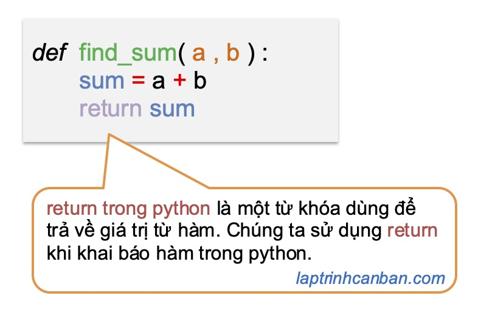

Hướng dẫn cách dùng return trong python. Trong lập trình Python, “return” là một từ khóa quan trọng và một phần quan trọng của các hàm. Nó thường được sử dụng để trả về giá trị từ một hàm và chấm dứt việc thực thi của hàm đó. Trong bài viết này, chúng ta sẽ tìm hiểu chi tiết về “return” trong Python, cách nó hoạt động, cách sử dụng và tầm quan trọng của nó trong lập trình.
return trong python là gì
return trong python là một từ khóa (keyword) là một từ khóa trong Python, được sử dụng để trả về một giá trị từ một hàm. Khi một hàm gặp từ khóa “return”, nó sẽ dừng thực thi và trả về giá trị được chỉ định. Giá trị trả về có thể là bất kỳ kiểu dữ liệu nào trong Python, bao gồm số nguyên, chuỗi, danh sách, dictionary, và thậm chí là một hàm khác.
return có tác dụng kết thúc hàm và trả lại điều khiển cũng như kết quả xử lý hàm cho người gọi. Chúng ta có thể sử dụng hoặc lược bỏ return khi khai báo hàm trong python, và một hàm có chứa return trong python được gọi là hàm trả về giá trị trong python.

Cú pháp của “return” trong Python như sau:
def ten_ham(): |
ten_hamlà tên của hàm bạn định nghĩa.gia_trilà giá trị mà hàm sẽ trả về. Nó có thể là một biểu thức hoặc một biến chứa giá trị.
Sử dụng “return” để trả về giá trị
Mục tiêu chính của “return” là trả về một giá trị từ hàm. Dưới đây là một ví dụ:
def tinh_tong(a, b): |
Kết quả sẽ là:
8 |
Trong ví dụ này, hàm tinh_tong tính tổng của hai số a và b, sau đó sử dụng từ khóa “return” để trả về giá trị tổng.
“return” có thể trả về nhiều kiểu dữ liệu
Một điều quan trọng là “return” có thể trả về bất kỳ kiểu dữ liệu nào trong Python. Ví dụ:
def lay_ten(): |
Trong trường hợp đầu tiên, hàm trả về một chuỗi, còn trong trường hợp thứ hai, nó trả về một giá trị boolean.
“return” có thể trả về nhiều giá trị
Python cũng cho phép hàm trả về nhiều giá trị bằng cách đặt chúng trong một cặp dấu ngoặc đơn. Ví dụ:
def tinh_tong_hieu(a, b): |
Kết quả sẽ là:
(8, 2) |
“return” và hàm không trả về giá trị
Hãy lưu ý rằng không phải tất cả các hàm đều phải có “return”. Một hàm có thể không có “return” hoặc không có “return” cụ thể (tức là không trả về giá trị). Trong trường hợp này, hàm mặc định sẽ trả về giá trị None.
Khi sử dụng return trong hàm không trả về giá trị trong python, chúng ta chỉ viết lệnh return vào cuối hàm như sau:
def function():
return
x = function()
Ví dụ cụ thể:
def myfunc(): |
Chúng ta cũng có thể lược bỏ đi return trong hàm không trả về giá trị như sau:
def myfunc(): |
Lại nữa, mặc dù các hàm không trả về giá trị trong python không trả về một giá trị nào tương ứng với các giá trị truyền vào hàm, tuy nhiên điều đó không có nghĩa là các hàm này không trả về bất cứ thứ gì cả. Thực chất, một giá trị mặc định None sẽ được trả về khi chúng ta không chỉ định một giá trị cụ thể trả về từ hàm. Ví dụ:
def myfunc(): |
Sử dụng return trong hàm trả về giá trị biểu thức
Ở phần trên chúng ta đã biết cách dùng return để trả về một giá trị cụ thể rồi. Tuy nhiên ngoài cách trả về một giá trị cụ thể như một số, một ký tự v.v.. như vậy thì chúng ta cũng có thể sử dụng return để trả về kết quả của một biểu thức tính toán.
Ví dụ, chúng ta có thể trả về kết quả phép cộng bằng cách viết trực tiếp biểu thức tính toán sau lệnh return như sau:
def add(x, y): |
Hoặc là chúng ta có thể trả về các giá trị true, false bằng cách viết trực tiếp phép so sánh sau lệnh return như sau:
def chanle(x): |
Cách viết biểu thức trên được gọi là toán tử 3 ngôi trong python, là một loại toán tử giúp rút gọn các lệnh điều kiện, giúp code C gọn gàng và tiết kiệm công sức viết hơn.
- Xem thêm: Toán tử 3 ngôi trong python
Sử dụng return trong hàm trả về nhiều giá trị
Về cơ bản, chúng ta chỉ có thể chỉ định một giá trị trả về đằng sau lệnh return. Tuy nhiên chúng ta cũng có thể dễ dàng trả về nhiều giá trị trong hàm Python bằng cách lưu giữ các giá trị này vào một đối tượng chứa nhiều phần tử như là một tuple hay một list chẳng hạn, sau đó chỉ định tuple hay list này là giá trị trả về sau lệnh return.
Sử dụng return để trả về nhiều giá trị được lưu giữ trong list
Chúng ta có thể trả về nhiều giá trị trong hàm Python bằng cách lưu giữ các giá trị này vào một list và chỉ định list đó là giá trị trả về sau lệnh return. Ví dụ:
def myfunc(): |
Sau đó, chúng ta có thể truy cập vào phần tử trong list này để lấy ra các giá trị trả về như sau:
x = myfunc() |
Sử dụng return để trả về nhiều giá trị được phân tách bằng dấu phẩy
Chúng ta có thể trả về nhiều giá trị trong hàm Python bằng cách lưu giữ các giá trị này vào một tuple và chỉ định list đó là giá trị trả về sau lệnh return. Sau đó bằng cách truy cập vào phần tử trong tuple python, chúng ta có thể lấy ra các giá trị trả về như ví dụ sau:
def myfunc(): |
Tuy nhiên khác với cách sử dụng list ở trên, với tuple chúng ta có thể lược bỏ đi cặp dấu ngoặc () khi chỉ định tuple. Do đó, chúng ta có thể ghi trực tiếp các giá trị trả về của hàm đằng sau câu lệnh return như sau:
def myfunc(): |
Lúc này, kết quả trả về cũng vẫn là một tuple như sau:
x = myfunc() |
Tuy nhiên, thêm một điều kỳ diệu nữa, là bằng cách lợi dụng chức năng Unpack trong python, chúng ta có thể gán trực tiếp các giá trị trả về vào các biến khác nhau như sau:
a,b = myfunc() |
Tóm lại, bằng cách sử dụng tuple và chức năng unpack trong python, chúng ta có thể dễ dàng trả về nhiều giá trị trong hàm Python đơn giản như sau:
def myfunc(): |
Sử dụng return để kết thúc hàm
Ngoài việc trả về giá trị, câu lệnh return cũng được sử dụng để kết thúc quá trình xử lý của hàm. Bằng cách sử dụng return, bạn có thể kết thúc một hàm tại một thời điểm nào đó khi đã thoả mãn một điều kiện ban đầu.
Ví dụ, chúng ta có thể kết thúc một hàm tuỳ thuộc vào giá trị nhập vào hàm đó như sau:
def checkNum(num): |
Kết quả:
num= 3 Gia tri trong pham vi tu 1 den 10 |
Bạn có thể thấy tuỳ thuộc vào giá trị truyền hàm vào, mà hàm có thể được kết thúc tại theo các điều kiện khác nhau, bằng cách sử dụng câu lệnh return như trên.
Tầm quan trọng của “return” trong lập trình
“return” có tầm quan trọng lớn trong lập trình Python vì nó cho phép bạn:
- Trả về kết quả tính toán từ hàm để sử dụng trong phần còn lại của chương trình.
- Tái sử dụng mã bằng cách gọi hàm và lấy giá trị trả về.
- Phân chia và tạo cấu trúc logic trong chương trình.
- Xử lý và kiểm tra điều kiện để quyết định cách chương trình hoạt động dựa trên giá trị trả về.
Tổng kết
Trên đây Kiyoshi đã hướng dẫn bạn về cách dùng return trong Python rồi. “return” là một phần quan trọng của lập trình Python, cho phép hàm trả về giá trị và kiểm soát luồng của chương trình. Bằng cách sử dụng “return”, bạn có thể thực hiện các tính toán, kiểm tra điều kiện và tạo cấu trúc logic phức tạp. Hiểu cách sử dụng “return” và tận dụng tối đa tính năng này là một phần quan trọng trong việc viết mã Python hiệu quả và đáp ứng các yêu cầu của dự án lập trình.
URL Link
https://laptrinhcanban.com/python/nhap-mon-lap-trinh-python/ham-trong-python/return-trong-python/
HOME › python cơ bản - lập trình python cho người mới bắt đầu>>14. hàm trong python